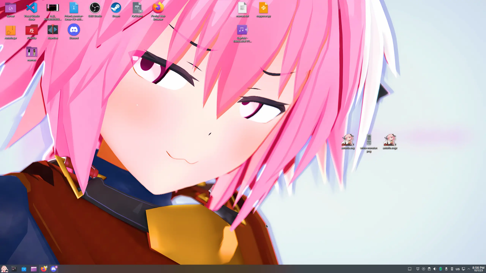
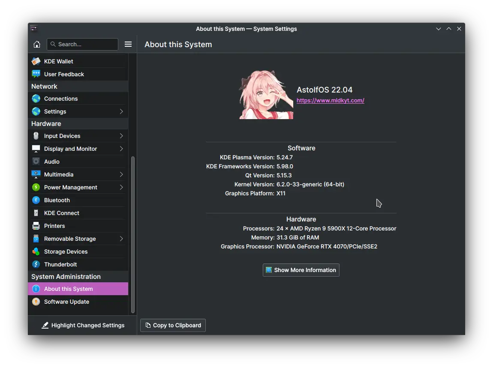
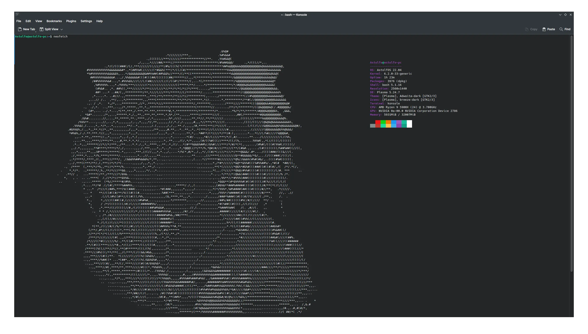
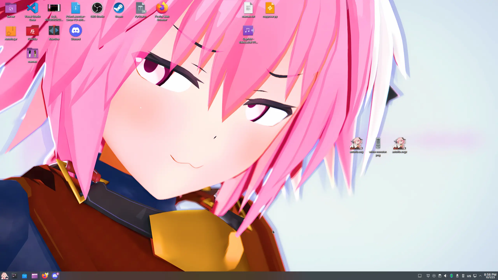
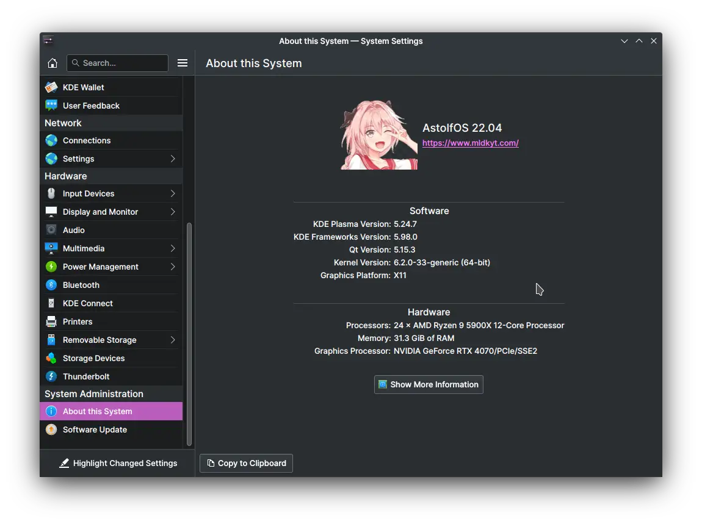
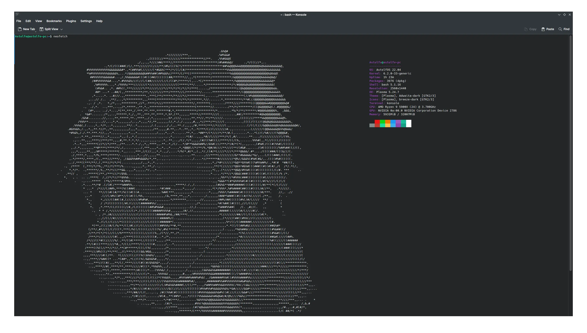

AstolfOS
AstolfOS transfers your Linux into AstolfOS!
This script changes the OS name, KDE splash screen, GRUB configuration, neofetch configuration, and terminal style.
  AstolfOS transfers your Linux into AstolfOS!
This script changes the OS name, KDE splash screen, GRUB configuration, neofetch configuration, and terminal style.
  